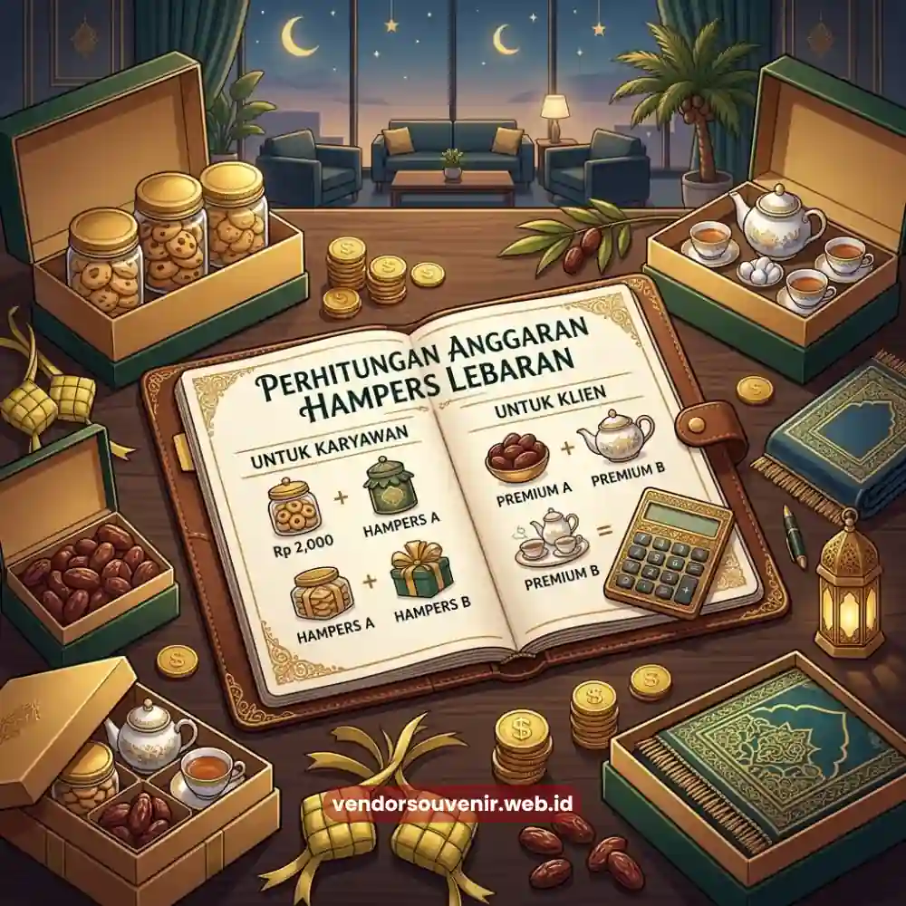
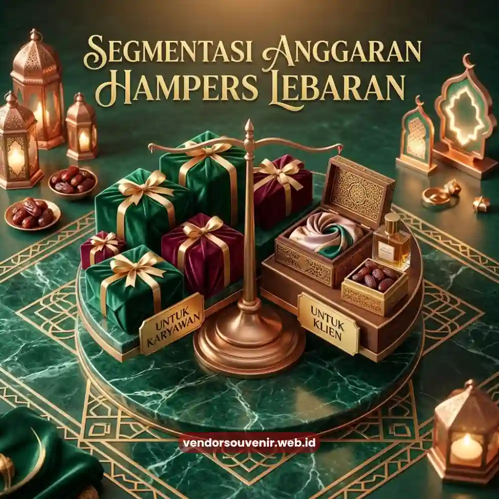

Daftar Isi
Anggaran hampers lebaran kantor sebaiknya dihitung berdasarkan jumlah total penerima, segmentasi kategori penerima, serta komponen biaya tambahan seperti kemasan custom dan ongkos distribusi.
Perhitungan yang matang membantu perusahaan menghindari pembengkakan biaya sekaligus memastikan setiap penerima mendapatkan hadiah yang layak sesuai posisinya.
Penyusunan anggaran yang terstruktur juga mempermudah proses persetujuan internal dari divisi keuangan.
- Anggaran hampers sebaiknya disusun berdasarkan segmentasi penerima, bukan angka rata di seluruh pihak.
- Komponen biaya mencakup isi produk, kemasan, custom logo, dan ongkos distribusi.
- Perencanaan anggaran lebih awal membantu perusahaan mendapatkan fleksibilitas harga yang lebih baik.
- Cadangan anggaran perlu disiapkan untuk mengantisipasi penambahan penerima mendadak.
- Konsultasi dengan vendor membantu menyusun simulasi anggaran yang lebih akurat.
Mengapa Perusahaan Perlu Menyusun Anggaran Hampers Secara Terstruktur?
Penyusunan anggaran yang terstruktur penting agar pengadaan hampers lebaran tidak membebani arus kas perusahaan menjelang periode akhir kuartal, yang biasanya juga bertepatan dengan berbagai kebutuhan operasional lainnya.
Tanpa perencanaan yang jelas, perusahaan berisiko melakukan pengeluaran mendadak dengan harga yang kurang kompetitif.
Selain aspek keuangan, anggaran yang terstruktur juga memudahkan proses audit internal karena setiap komponen biaya, mulai dari isi produk hingga ongkos kirim, dapat ditelusuri secara jelas berdasarkan kategori penerima.
Bagaimana Cara Menghitung Anggaran Hampers Lebaran Kantor per Karyawan?
Cara menghitung anggaran per karyawan dimulai dari menentukan total anggaran keseluruhan, kemudian membaginya berdasarkan jumlah penerima pada masing-masing segmen, seperti staf, level manajerial, dan klien eksternal.
Pendekatan ini memastikan distribusi anggaran tetap proporsional sesuai kebijakan internal perusahaan.
Apa Saja Komponen Biaya dalam Anggaran Hampers Lebaran Kantor?
Komponen biaya yang perlu diperhitungkan meliputi harga isi produk, biaya kemasan, biaya tambahan untuk custom logo apabila diperlukan, serta ongkos distribusi ke masing-masing alamat penerima.
Mengabaikan salah satu komponen ini sering menjadi penyebab utama pembengkakan anggaran di luar rencana awal.
Ongkos distribusi khususnya sering kali kurang diperhitungkan secara detail, padahal biaya ini dapat bervariasi cukup signifikan tergantung sebaran lokasi penerima, terutama jika perusahaan memiliki cabang di berbagai kota.

Segmentasi Anggaran Hampers Karyawan dan Klien
Bagaimana Menentukan Segmentasi Anggaran untuk Karyawan dan Klien?
Segmentasi anggaran sebaiknya mempertimbangkan tingkat kedekatan relasi bisnis dan kontribusi penerima terhadap perusahaan, sehingga klien prioritas maupun jajaran manajemen dapat menerima paket dengan nilai lebih tinggi dibanding kategori umum.
Pendekatan bertingkat ini umum diterapkan agar anggaran tetap efisien tanpa mengurangi kesan penghargaan pada setiap kategori.
Apakah Perlu Menyiapkan Cadangan Anggaran Hampers Lebaran?
Menyiapkan cadangan anggaran sangat disarankan untuk mengantisipasi penambahan jumlah penerima mendadak, misalnya karyawan baru yang bergabung mendekati periode Lebaran atau penambahan klien baru yang belum masuk dalam perencanaan awal.
Cadangan anggaran biasanya berkisar pada persentase tertentu dari total anggaran utama, disesuaikan dengan kebijakan masing-masing perusahaan.
Tanpa cadangan ini, perusahaan berisiko mengalami kekurangan stok hampers pada saat-saat terakhir, yang dapat memengaruhi kualitas maupun ketepatan waktu distribusi kepada seluruh penerima.
Bagaimana Cara Mendapatkan Simulasi Anggaran yang Lebih Akurat?
Simulasi anggaran yang lebih akurat dapat diperoleh melalui konsultasi langsung dengan vendor penyedia hampers, karena vendor umumnya dapat memberikan gambaran biaya berdasarkan jumlah pesanan, tingkat kustomisasi, dan wilayah distribusi yang dibutuhkan perusahaan.
Pendekatan ini lebih realistis dibanding hanya mengandalkan estimasi internal tanpa data harga aktual di lapangan.
Konsultasi sejak tahap awal juga membuka peluang penyesuaian komposisi isi hampers agar tetap sesuai target anggaran tanpa mengorbankan kesan kualitas yang ingin disampaikan perusahaan kepada penerimanya.
Menyusun anggaran hampers lebaran kantor secara proporsional membutuhkan perhitungan yang mempertimbangkan segmentasi penerima, komponen biaya menyeluruh, serta cadangan anggaran untuk kebutuhan tak terduga.
Perencanaan yang matang sejak awal akan membuat proses pengadaan hampers berjalan lebih efisien dan terkendali.

Solusi Hampers dari Vendor Terpercaya
Bingung Menyesuaikan Budget Hampers?
Tim ahli kami siap membantu Anda menghitung dan menyusun simulasi anggaran hampers terbaik untuk perusahaan Anda.
Dapatkan produk premium berkualitas yang sesuai dengan rencana keuangan korporasi Anda.
Dapatkan penawaran harga terbaik untuk pesanan massal!
FAQ Seputar Anggaran Hampers Lebaran
Apakah anggaran hampers harus sama untuk semua karyawan?
Tidak harus, banyak perusahaan menerapkan segmentasi anggaran berdasarkan level jabatan atau kategori penerima.
Berapa persentase ideal untuk cadangan anggaran hampers?
Besaran cadangan dapat bervariasi tergantung kebijakan internal, namun sebaiknya cukup untuk mengantisipasi penambahan penerima dalam jumlah wajar.
Apakah ongkos distribusi termasuk dalam anggaran hampers?
Ya, ongkos distribusi sebaiknya selalu dimasukkan dalam perhitungan anggaran agar tidak menjadi biaya tak terduga di akhir proses.
Maroon Souvenir
Partner Corporate Gift terpercaya di Indonesia. Berpengalaman melayani ratusan perusahaan sejak 2018.
Lihat Portofolio Kami